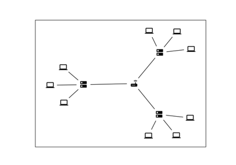
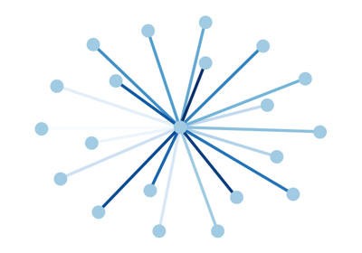
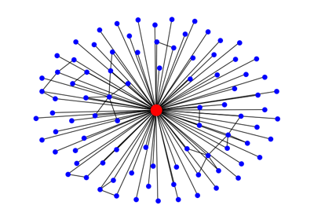
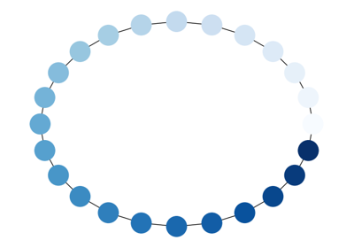

Drawing# Chess Masters Chess Masters  Custom node icons Custom node icons Degree Analysis Degree Analysis Directed Graph Directed Graph  Edge Colormap Edge Colormap  Ego Graph Ego Graph Eigenvalues Eigenvalues Four Grids Four Grids House With Colors House With Colors Knuth Miles Knuth Miles Labels And Colors Labels And Colors Multipartite Layout Multipartite Layout  Node Colormap Node Colormap Rainbow Coloring Rainbow Coloring Random Geometric Graph Random Geometric Graph Sampson Sampson Self-loops Self-loops Simple Path Simple Path Spectral Embedding Spectral Embedding Traveling Salesman Problem Traveling Salesman Problem Unix Email Unix Email Weighted Graph Weighted Graph